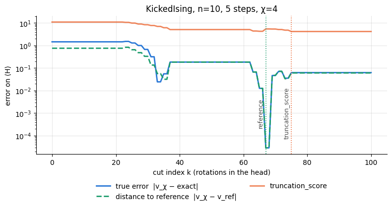
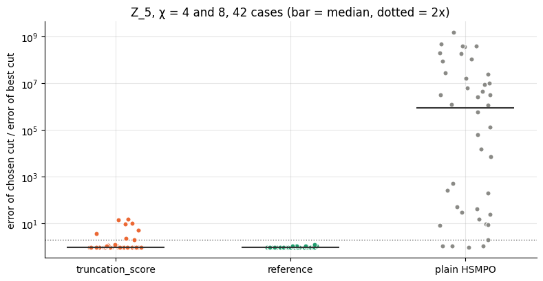

Choosing the head/tail split with best_split¶
HQSMPO splits the chain of \(K\) dressed Pauli rotations at a cut \(k\): the head, rotations \([0, k)\), acts on the initial state, and the tail, rotations \([k, K)\), is folded into the observable as an MPO. Classically (method="simulation") the head is a truncated MPS and the expectation value is \(\langle \mathrm{head}_k | O_k | \mathrm{head}_k \rangle\).
At a fixed bond dimension \(\chi\) the cut decides where the truncation happens. Two extremes are always available:
\(k = 0\): every rotation is folded into the observable (Heisenberg picture), so only the tail MPO is truncated;
\(k = K\): every rotation is applied to the state, so only the head MPS is truncated. This is exactly what a plain
HSMPOcomputes at the same \(\chi\).
A cut in between shares the entanglement between state and operator, and can be far more accurate than either extreme. split_scan evaluates every cut in one pass; best_split picks one. It offers two criteria:
``truncation_score`` (the default, no extra cost): how much weight the two truncations discarded, \(\varepsilon_\mathrm{tail}(k) + \lVert c\rVert_1 \sqrt{1 - F_\mathrm{head}(k)}\). It measures how much was truncated, not how much that moves \(\langle O\rangle\), so it can misrank cuts.
``reference=True`` (one extra scan): repeat the scan with a looser truncation, \(2\chi\) and SVD cutoff \(10^{-12}\) (
reference_scan), and pick the cut whose value moves least, \(\min_k |v_\chi(k) - v_\mathrm{ref}(k)|\). Where the reference is accurate, this distance is the error of cut \(k\).
Throughout, the instance is built with light_cone=True: each Pauli term of the observable is folded only with the tail rotations it can see. The others cancel exactly, but folding them anyway grows the MPO and gets them truncated. Skipping them makes both scans cheaper and, on shallow circuits, much more accurate (see below).
This notebook shows a case where the two criteria disagree, and checks against the exact state vector which one to trust.
[1]:
import time
import matplotlib.pyplot as plt
import numpy as np
from qibo import hamiltonians, symbols
from mpstab import HSMPO
from mpstab.evolutors.hqsmpo import HQSMPO
from mpstab.models.ansatze import HardwareEfficientBrickwork, KickedIsing, TrotterIsing
BLUE, ORANGE, GREEN, GRAY = "#2a78d6", "#eb6834", "#1f9e6e", "#8a8a86"
FLOOR = 1e-16 # plotting floor for errors at rounding level
plt.rcParams.update(
{
"axes.spines.top": False,
"axes.spines.right": False,
"axes.grid": True,
"grid.alpha": 0.3,
"lines.linewidth": 2,
}
)
/home/robdilauro/tesi/mpstab/.venv/lib/python3.12/site-packages/tqdm/auto.py:21: TqdmWarning: IProgress not found. Please update jupyter and ipywidgets. See https://ipywidgets.readthedocs.io/en/stable/user_install.html
from .autonotebook import tqdm as notebook_tqdm
Setup¶
A kicked Ising circuit on 10 qubits, 5 steps (\(K = 100\) dressed rotations), and the transverse-field Ising Hamiltonian
at bond dimension \(\chi = 4\) for both the head MPS and the tail MPO.
Ten qubits are small enough for qibo’s state vector to give the exact value. We use it only to check the choices, never to make them. (An untruncated HQSMPO is not a safe exact reference: the default SVD cutoff, \(10^{-10}\), still truncates, and over a long fold it adds up to errors well above \(10^{-10}\).)
[2]:
nqubits, chi = 10, 4
def tfim(n, h=0.7):
form = sum(symbols.Z(i) * symbols.Z(i + 1) for i in range(n - 1))
form += h * sum(symbols.X(i) for i in range(n))
return hamiltonians.SymbolicHamiltonian(form, nqubits=n)
def exact_value(ansatz, observable):
# qibo state vector: no truncation anywhere
return float(np.real(observable.expectation_from_state(ansatz.circuit().state())))
# the circuit's angles are a random draw, see the robustness section below
ansatz = KickedIsing(nqubits=nqubits, n_steps=5, theta_h=0.8459721981904618, theta_z=0.7294965609839984)
hamiltonian = tfim(nqubits)
exact = exact_value(ansatz, hamiltonian)
print(f"Exact <H> = {exact:.12f}")
[Qibo 0.3.6|INFO|2026-11-25 11:37:17]: Using numpy backend on /CPU:0
Exact <H> = 2.505470619330
Scanning every cut¶
split_scan builds the head forwards once, storing the MPS at each cut, and folds each term’s tail backwards once, contracting with the stored head whenever it reaches a cut. reference_scan does the same at \(2\chi\) and a lower SVD cutoff, leaving hs untouched. Both follow the instance’s light_cone, and both can be handed to best_split, so nothing is computed twice.
[3]:
hs = HQSMPO(ansatz, max_bond_dimension=chi, light_cone=True, progress=False)
start = time.perf_counter()
scan = hs.split_scan(hamiltonian)
t_scan = time.perf_counter() - start
start = time.perf_counter()
reference = hs.reference_scan(hamiltonian)
t_ref = time.perf_counter() - start
print(f"{len(scan)} cuts: scan {t_scan:.1f} s, reference scan {t_ref:.1f} s")
by_score = hs.best_split(scan=scan)
by_reference = hs.best_split(scan=scan, reference=reference)
K = len(scan) - 1
cuts = np.array([p.cut_index for p in scan])
values = np.array([p.result.value for p in scan])
ref_values = np.array([p.result.value for p in reference])
true_error = np.abs(values - exact)
score = np.array([p.truncation_score for p in scan])
distance = np.abs(values - ref_values)
print(f"K = {K}; truncation_score picks cut {by_score.cut_index}, reference picks cut {by_reference.cut_index}")
101 cuts: scan 8.6 s, reference scan 9.2 s
K = 100; truncation_score picks cut 75, reference picks cut 67
The last cut is the plain HSMPO result at the same \(\chi\): as a sanity check, the two agree.
[4]:
hsmpo_value = float(np.real(HSMPO(ansatz, max_bond_dimension=chi, progress=False).expectation(hamiltonian)))
print(f"HSMPO (chi={chi}): {hsmpo_value:.12f}")
print(f"split at cut K: {values[K]:.12f}")
HSMPO (chi=4): 2.568202356636
split at cut K: 2.568202356636
Now compare the two best_split choices with the fixed cuts one might pick without a scan, and with the cut that has the smallest true error, best cut (exact), which needs the exact value.
[5]:
choices = {
"cut 0 (all in the tail MPO)": 0,
"cut K/2": K // 2,
"cut K (plain HSMPO)": K,
"best_split, truncation_score": by_score.cut_index,
"best_split, reference=True": by_reference.cut_index,
"best cut (exact)": int(np.argmin(true_error)),
}
print(f"{'choice':<32}{'cut':>5}{'|error|':>12}")
for name, k in choices.items():
print(f"{name:<32}{k:>5}{true_error[k]:>12.2e}")
choice cut |error|
cut 0 (all in the tail MPO) 0 1.46e+00
cut K/2 50 1.85e-01
cut K (plain HSMPO) 100 6.27e-02
best_split, truncation_score 75 6.27e-02
best_split, reference=True 67 2.88e-05
best cut (exact) 67 2.88e-05
The reference lands on the best cut (exact), about three orders of magnitude below the plain HSMPO. truncation_score picks a cut on the plateau that ends at the plain HSMPO, with the same error.
The plot shows the whole scan: the true error (blue), the distance to the reference that reference=True minimises (green), and truncation_score (orange). The green curve follows the blue one closely: where the reference is much more accurate than \(\chi\), \(|v_\chi - v_\mathrm{ref}| \approx
|v_\chi - v_\mathrm{exact}|\). truncation_score sits orders of magnitude above both and is nearly flat: it misses the narrow dip around the best cut and bottoms out on the plateau before the plain HSMPO. The cuts where the least weight is discarded are not always the ones where \(\langle H\rangle\) moves least.
[6]:
fig, ax = plt.subplots(figsize=(8, 4.4))
ax.semilogy(cuts, np.maximum(true_error, FLOOR), "-", color=BLUE, label="true error |v_χ − exact|")
ax.semilogy(cuts, np.maximum(distance, FLOOR), "--", color=GREEN, label="distance to reference |v_χ − v_ref|")
ax.semilogy(cuts, np.maximum(score, FLOOR), "-", color=ORANGE, alpha=0.8, label="truncation_score")
for k, color, text in [(by_reference.cut_index, GREEN, "reference"), (by_score.cut_index, ORANGE, "truncation_score")]:
ax.axvline(k, color=color, ls=":", lw=1.2)
ax.annotate(text, (k, 1e-3), textcoords="offset points", xytext=(-12, 0), fontsize=9, color="0.3", rotation=90, va="center")
ax.set_xlabel("cut index k (rotations in the head)")
ax.set_ylabel("error on ⟨H⟩")
ax.set_title(f"KickedIsing, n={nqubits}, 5 steps, χ={chi}")
ax.legend(loc="upper center", bbox_to_anchor=(0.5, -0.16), ncol=2, frameon=False)
fig.tight_layout()
plt.show()

Why the reference needs a lower cutoff too¶
Doubling \(\chi\) alone is not enough. The SVD cutoff also truncates, and the same cutoff at \(\chi\) and \(2\chi\) discards the same small Schmidt values, so those errors cancel in \(|v_\chi - v_{2\chi}|\) and stay invisible. On long circuits, Trotter in particular, they add up to \(10^{-6}\) to \(10^{-4}\) near cut 0, and a reference with the default cutoff then prefers exactly those cuts. reference_scan therefore lowers the cutoff to \(10^{-12}\) as well
(svd_cutoff= changes it, bond_factor= the bond multiplier). The cutoff of the scan being ranked stays as it is: it keeps the networks small, and the reference measures its effect too.
What the light cone adds¶
On the kicked Ising circuit above, five steps are enough for every term’s light cone to cover the whole chain, so light_cone=True only saves time. On a shallow circuit the cones are narrow. Take one layer of a brickwork ansatz: each term of \(H\) sees only a few rotations, and folded alone they fit in \(\chi = 4\). Without the light cone, the rotations outside the cone are folded too and truncated, and no cut is accurate.
[7]:
np.random.seed(0)
shallow = HardwareEfficientBrickwork(nqubits=nqubits, nlayers=1)
exact_shallow = exact_value(shallow, hamiltonian)
print(f"{'light_cone':<12}{'chosen cut':>11}{'|error|':>12}{'time (s)':>10}")
for light_cone in (False, True):
hs_shallow = HQSMPO(shallow, max_bond_dimension=chi, light_cone=light_cone, progress=False)
start = time.perf_counter()
choice = hs_shallow.best_split(hamiltonian, reference=True)
elapsed = time.perf_counter() - start
print(f"{str(light_cone):<12}{choice.cut_index:>11}{abs(choice.result.value - exact_shallow):>12.2e}{elapsed:>10.1f}")
light_cone chosen cut |error| time (s)
False 1 5.13e-03 13.2
True 0 2.66e-15 10.1
With the light cone the chosen cut is exact to machine precision. Without it, even the best cut is off by about \(5 \times 10^{-3}\). The reference picks well in both cases: the light cone changes what the scan can reach, not how the cut is chosen.
How robust is the choice?¶
One circuit could be a lucky draw. We repeat the comparison on brickwork, kicked Ising and Trotter circuits with \(\chi = 4\) and \(8\), for the local observable \(Z_5\), which is cheap to scan, with light_cone=True. This takes a couple of minutes.
[8]:
def circuits():
for nlayers in (1, 2):
for seed in range(4):
np.random.seed(seed)
yield "brickwork", HardwareEfficientBrickwork(nqubits=nqubits, nlayers=nlayers)
rng = np.random.default_rng(0)
for steps in (4, 5, 6):
for _ in range(3):
theta_h, theta_z = rng.uniform(0.3, 1.2), rng.uniform(0.0, 1.0)
yield "kicked", KickedIsing(nqubits=nqubits, n_steps=steps, theta_h=theta_h, theta_z=theta_z)
for steps in (6, 8):
for dt in (0.2, 0.3):
yield "trotter", TrotterIsing(nqubits=nqubits, n_steps=steps, dt=dt)
z_mid = "I" * (nqubits // 2) + "Z" + "I" * (nqubits - nqubits // 2 - 1)
z_mid_qibo = hamiltonians.SymbolicHamiltonian(symbols.Z(nqubits // 2), nqubits=nqubits)
NOISE = 1e-10 # errors below this are rounding: treat them as equal
rows = []
start = time.perf_counter()
for family, circuit in circuits():
exact = exact_value(circuit, z_mid_qibo)
for bond in (4, 8):
hs = HQSMPO(circuit, max_bond_dimension=bond, light_cone=True, progress=False)
scan = hs.split_scan(z_mid)
reference = hs.reference_scan(z_mid)
error = np.array([abs(p.result.value - exact) for p in scan])
if error.max() < NOISE:
continue # every cut exact: nothing to choose
best = max(error.min(), NOISE)
ratio = lambda k: max(error[k], NOISE) / best # noqa: E731
rows.append(
{
"family": family,
"truncation_score": ratio(hs.best_split(scan=scan).cut_index),
"reference": ratio(hs.best_split(scan=scan, reference=reference).cut_index),
"plain HSMPO": ratio(len(scan) - 1),
}
)
print(f"{len(rows)} cases in {time.perf_counter() - start:.0f} s")
strategies = ["truncation_score", "reference", "plain HSMPO"]
print(f"{'criterion':<18}{'<= 2x best':>12}{'<= 10x best':>13}{'> 100x best':>13}{'worst':>10}")
for s in strategies:
r = np.array([row[s] for row in rows])
print(f"{s:<18}{(r <= 2).sum():>9}/{len(r)}{(r <= 10).sum():>10}/{len(r)}{(r > 100).sum():>10}/{len(r)}{r.max():>10.1e}")
42 cases in 63 s
criterion <= 2x best <= 10x best > 100x best worst
truncation_score 34/42 39/42 0/42 1.5e+01
reference 42/42 42/42 0/42 1.2e+00
plain HSMPO 4/42 8/42 29/42 1.5e+09
[9]:
fig, ax = plt.subplots(figsize=(8, 4.2))
jitter = np.random.default_rng(0)
colors = {"truncation_score": ORANGE, "reference": GREEN, "plain HSMPO": GRAY}
for i, s in enumerate(strategies):
y = np.array([row[s] for row in rows])
ax.scatter(i + jitter.uniform(-0.15, 0.15, len(y)), y, s=26, color=colors[s], edgecolor="white", linewidth=0.8, zorder=3)
ax.hlines(np.median(y), i - 0.28, i + 0.28, color="0.2", lw=1.5, zorder=4)
ax.set_yscale("log")
ax.axhline(2, color="0.4", ls=":", lw=1)
ax.set_xticks(range(len(strategies)), strategies)
ax.set_ylabel("error of chosen cut / error of best cut")
ax.set_title(f"Z_5, χ = 4 and 8, {len(rows)} cases (bar = median, dotted = 2x)")
fig.tight_layout()
plt.show()

On \(Z_5\) the reference picks a cut within 2x of the best one in every case; truncation_score mostly does too, but misses by up to ~15x, and the plain HSMPO is often many orders of magnitude worse.
The same comparison with the Hamiltonian \(H\) as well, 84 cases in all (10 qubits, \(\chi = 4\) and \(8\)), with and without the light cone. Each chosen cut’s error is divided by the lowest error any cut reaches in either scan; errors below \(10^{-10}\) are treated as equal:
criterion |
\(\le 2\times\) best |
\(\le 10\times\) best |
\(> 100\times\) best |
worst |
|---|---|---|---|---|
|
80 / 84 |
84 / 84 |
0 |
7.4x |
|
72 / 84 |
78 / 84 |
5 |
~4e8x |
|
60 / 84 |
75 / 84 |
2 |
~2200x |
|
56 / 84 |
70 / 84 |
7 |
~1e9x |
plain |
10 / 84 |
23 / 84 |
47 |
~8e9x |
Without the light cone, the reference’s large misses are all shallow brickwork circuits like the one above: it picks the best cut of its scan, but that scan cannot reach what the light cone reaches. A reference at \(2\chi\) with the default cutoff does much worse, up to ~6e5x off, mostly on Trotter circuits. Neither adding the reference’s own truncation_score to the distance nor computing the reference only on the top cuts by truncation_score improved on the plain distance.
Takeaways¶
The best cut depends on the circuit, the observable and \(\chi\); neither extreme is a safe default, and the plain
HSMPOis the \(k = K\) extreme.best_split(observable, reference=True)on an instance withlight_cone=Trueis the reliable choice: within 7.4x of the best cut in all 84 benchmark cases, with no exact value needed.Its cost is one
split_scanat \(\chi\) plus one at \(2\chi\) (the reference), so the reference costs as much as a scan at twice the bond. How much that is depends on whether the bond cap is reached. Measured withlight_cone=True, \(H\) as above:circuit
\(\chi\)
scan
reference
best_split(reference=True)vs scan alonebrickwork, 2 layers, \(n = 24\)
4 to 16
80 s
80 s
2.0x
kicked Ising, 4 steps, \(n = 24\)
4 to 128
60 s
60 s
2.0x
kicked Ising, 12 steps, \(n = 16\)
8
84 s
112 s
2.3x
kicked Ising, 12 steps, \(n = 16\)
64
285 s
551 s
2.9x
In shallow circuits the bond never reaches \(\chi\), the scan time is set by the number of folds (\(\approx T K\) for \(T\) Pauli terms and \(K\) rotations), and the reference costs the same as the scan. Once the cap is reached, contractions grow as \(\chi^3\), so at large \(\chi\) the reference can approach \(8\times\) the scan. It also keeps one head MPS per cut at \(2\chi\), about \(4\times\) the memory of the scan’s heads.
best_split(observable)(truncation_score) costs nothing extra and is a reasonable first guess, but it ranks discarded weight, not error.light_cone=Truenever made the choice worse in the benchmark, made both scans about 20% cheaper, and on shallow circuits turned errors of \(10^{-3}\) to \(10^{-2}\) into exact results. Set it on the instance, so thatexpectation_at_cutlater folds the chosen cut the same way.On hardware the head runs exactly, so these classical criteria rank only part of the error. Pass a custom
keyto trade the tail truncation against what the device pays, e.g.key=lambda p: p.result.truncation_l2 + w * hs.resynthesize_head(p.cut_index).n_two_qubit_gates.